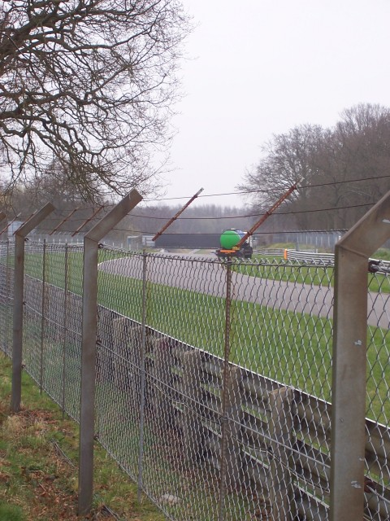
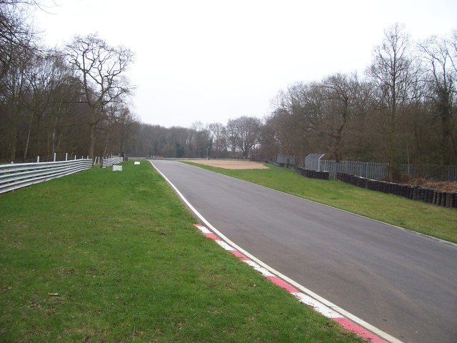
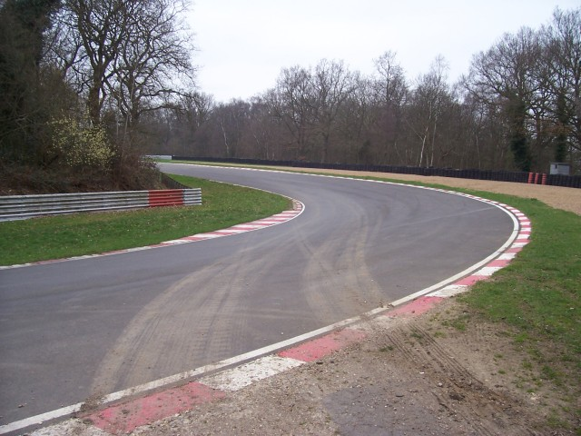
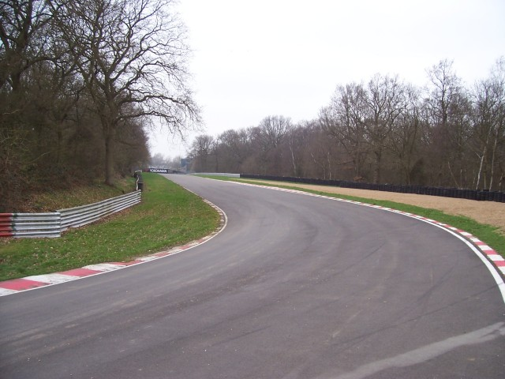
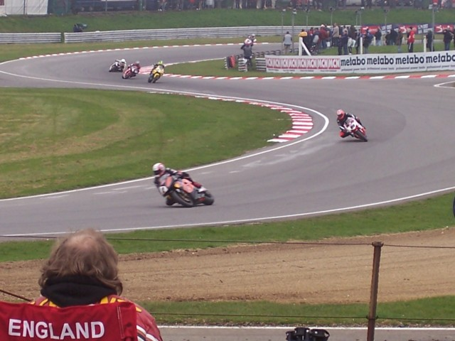
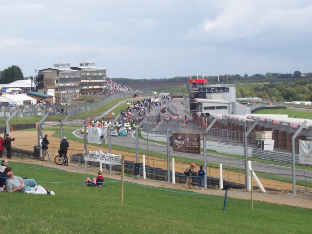

Numbers and arrows on the map indicate the location and direction in which the photographs were taken.
Brands Hatch - Surtees to Clark
|| Contents | Start to Surtees | Surtees to Clark || Home ||
Numbers and arrows on the map indicate the location and direction in which the
photographs were taken.
Return to racingcircuits.net's Photo Archive Main Index

7 - Pilgrims Drop to Hawthorn Hill

8 - Looking at Sheene's from Stirling's

9 - Stirling's

10 - Stirling's to Clearways

11 - Surtees to Clearways from other side of
the track

12 - Brabham Straight & Pitlane from
banking at Clark
Photos ©Andy Sharpe. Reproduced here with kind permission